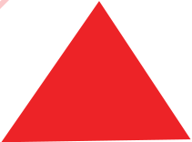
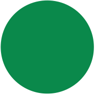
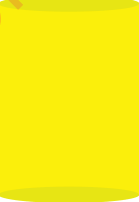

Activity 3
Study shapes (a) to (e) in Figure 5, then name the colour of each shape.
(a)
(b)

(c)

(d)

(e)
Figure 5: Shapes with different colours
Study shapes (a) to (e) in Figure 5, then name the colour of each shape.


